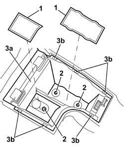

7040L75 GLOVE COMPARTMENT ON REAR TUNNEL TRIM R. R.
- Path
- Procedures > 70 FITTINGS > 7040 BODY INTERIOR FITTINGS AND TRIM > 7040L CABIN FLOOR COVERING > 7040L75 GLOVE COMPARTMENT ON REAR TUNNEL TRIM R. R.
- Kind
- repair procedure (removal / refitting; the operation number is the code)
- Applies to
- all engines; all production periods
- Interactive page
- https://sloeber94.github.io/elrnDB/#/939011280
Applies to: all engines; all production periods
 Removing
Removing
 Refitting
RefittingOp. 7040L33 ARMREST ON TUNNEL COVER WITH ODDMENTS COMPARTMENT - R.R.
1. Keep the rubber covers.
2. Undo the bolts.
3. Extract the oddments pocket (3a) releasing the internal retainers (3b).

Applies to: all engines; all production periods
Refitting
Removing- Check that the oddments pocket is not damaged.
- Position the oddments pocket and attach the inner retainers.
- Tighten the bolts.
- Fit the rubber covers in place.
Op. 7040L33 ARMREST ON TUNNEL COVER WITH ODDMENTS COMPARTMENT - R.R.